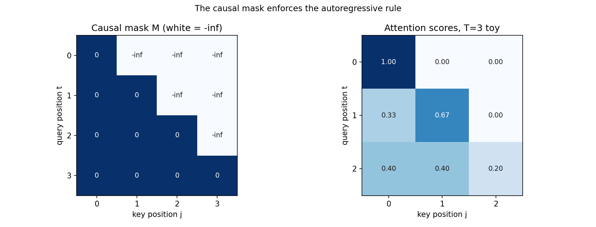
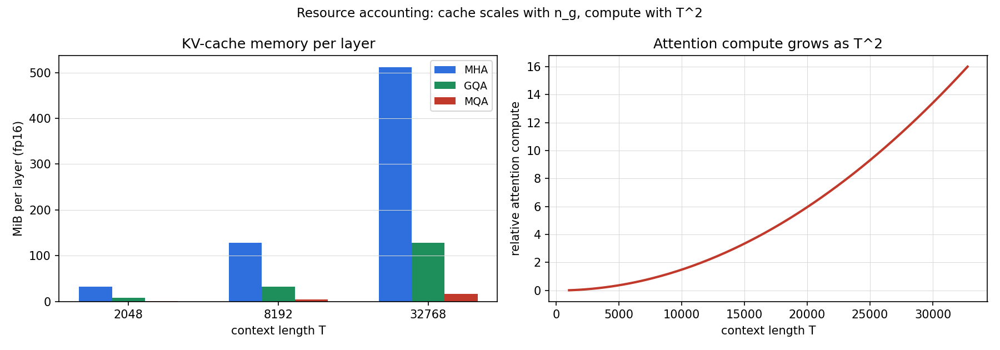

Lesson 14 · LLM architecture, training
Lesson 14, LLM architecture and training
Unit: cs229-U14. Leaf concepts: cs229-U14-C01 to C12 (tokenization, autoregressive factorization, next-token loss, transformer, positional/mask structure, attention variants, MoE, in-context learning, zero-shot prompts, SFT, train/infer mismatch, resource accounting bridge). Date: 2026-10-06. Baseline: October 6, 2026.
Source mapping
Chapter 17 (SRC-01, PDF pages 203-219) was read in full on 2026-10-06: tokenization (17.1), autoregressive modeling and the next-token loss (17.2), the transformer interface (17.2), single-head and multi-head attention with masking (17.3), KV cache and memory/compute (17.3), attention variants (17.4), MoE (17.5), in-context learning (17.6), zero-shot prompting (17.7), and SFT (17.8). Lecture 14 and 15 transcripts cover LLMs and attention variants (SRC-02), headers inspected, transcript content not yet read in depth. Two boundaries: (a) the notes explicitly defer positional embeddings to a future revision (footnotes in 17.2 and 17.3), the causal mask is taught from the notes, and positional schemes are standard background. (b) “Train/infer mismatch” and “resource accounting” are not named in the notes, they are taught as standard-background bridges (exposure bias. FLOPs/memory accounting built from the notes’ own complexity statements). Leaf rows carry SOURCE ATTRIBUTION PENDING until the RUN 6 pass.
Scope and objectives
Scope: how a modern autoregressive LLM is built and trained: tokens in, next-token loss, transformer blocks, attention and its variants, MoE, and the post-training adaptations (ICL, prompting, SFT), plus the train/inference gap and the resource ledger.
Objectives: the learner can (1) explain BPE tokenization, (2) write the autoregressive factorization and the training loss, (3) compute single-head causal attention by hand, (4) account for KV-cache memory and attention compute, (5) compare MHA/GQA/MQA, (6) explain MoE routing, (7) contrast ICL, zero-shot prompting, and SFT, and (8) state the train/infer mismatch and the resource costs.
Dependencies
Prerequisites: P12, P13, P14 (shared bridges, linked). Unit U07 (neural nets), Unit U13 (pretraining/transfer).
Not-yet-understood list:
- Why attention needs a mask (remediated in SL-04).
- What SFT changes versus prompting (remediated in SL-08).
SL-01: Tokenization
Covers C01 (tokenization).
Source anchor
SRC-01 section 17.1, pages 202-203. A language model does not read raw strings. Text is broken into tokens: whole words, word pieces, punctuation, whitespace, bytes, or special markers such as end-of-text. A tokenizer maps a string to x = (x_1, …, x_T) with x_t in the vocabulary V. Modern models use subword tokenization, usually byte-pair encoding (BPE) [Sennrich et al., 2016].
BPE intuition
Start from tiny pieces (bytes or characters). Repeatedly add a new token for the adjacent pair that occurs most often in the corpus. After many merges, common strings (“ing”, “tion”, whole common words) become single tokens, rare words still split into pieces. The notes’ examples: “glioblastoma” becomes glio+blast+oma, “LLMification” becomes LL+M+ification.
The compromise
Character-level: tiny vocabulary, long sequences. Word-level: short sequences for common text, but rare words collapse to an unknown token. Subword sits between: the vocabulary |V| is on the order of 1e5 (the notes cite Qwen3.5 at 248,320 tokens) and the sequence length T stays manageable. The tokenizer is fixed before pretraining, and it shapes both |V| and T for everything after.
Correctness checks
- The tokenizer must be fixed before training and identical at inference. A different segmentation is a different input distribution.
- Rare strings must still encode (as pieces), never as unknown, for BPE.
Nearest alternative
Character-level modeling: no tokenizer at all. Simpler pipeline, much longer sequences, harder long-range modeling.
Failure case
Training with one tokenizer and serving with another: token ids shift meaning and the model’s learned embeddings misalign. Silent and catastrophic.
SL-02: Autoregressive factorization and the loss
Covers C02 (autoregressive factorization), C03 (next-token loss).
Source anchor
SRC-01 section 17.2, pages 203-207. A language model represents p(x_1, …, x_T). The support has size |V|^T: astronomical. The chain rule factors it:
p(x_1, …, x_T) = p(x_1) p(x_2 | x_1) … p(x_T | x_1, …, x_{T-1}). (17.1)
Each conditional has support |V|: one distribution over the vocabulary per position.
The training loss
Maximum likelihood, normalized by length:
loss = -(1/T) log p_theta(x_1, …, x_T) = (1/T) sum_t l_ce(f_theta(x_0, …, x_{t-1}), x_t), (17.12-17.13)
the cross-entropy between the logits and the true next token, averaged over positions and then over sequences. The standard optimizer is AdamW [Loshchilov and Hutter, 2019] on mini-batches of sequences.
Motivating question
How do you train on raw text with no labels?
Mental model
Every position is a classification problem with |V| classes, and the label is free: it is the next token. One long document yields T training examples. The model learns “which sentences are plausible” by learning to continue them.
Correctness checks
- The loss at position t may only use x_0, …, x_{t-1}. Using x_t as input is label leakage (the mask of SL-04 enforces this structurally).
- Average over answer positions only in SFT (SL-08), over all positions in pretraining.
Nearest alternative
Masked language modeling (BERT): predict hidden tokens from both sides. Not autoregressive, different loss, different use (the notes flag this explicitly).
Failure case
Training on packed documents without boundary tokens or masks: the model learns to continue across document boundaries and blends unrelated contexts.
SL-03: The transformer interface
Covers C04 (transformer).
Source anchor
SRC-01 sections 17.2-17.3, pages 204-208. Tokens become row-vector embeddings e_i in R^{1 x d}, stacked into E in R^{|V| x d} (17.2). A special beginning token x_0 is prepended. The transformer f_theta maps the embedding sequence to logit vectors (u_1, …, u_{T+1}) with u_t in R^{|V|}:
p_theta(x_t | x_1, …, x_{t-1}) = softmax(f_theta(x_0, …, x_{t-1})). (17.3)
Crucially, u_t depends only on x_0, …, x_{t-1}: the autoregressive property, built into the architecture by the mask.
Blocks
A transformer stacks blocks of multi-head self-attention and position-wise MLPs (GELU or SwiGLU activations, from section 7.3). Two wirings: PreNorm applies layer norm before attention and the MLP (17.28-17.29). PostNorm applies it after each residual (17.30-17.31). Modern LLMs use PreNorm, usually with RMSNorm. The MLP acts per position with shared weights, attention is the only cross-position mixing.
Positional boundary
Self-attention is permutation-equivariant: without extra signal it cannot tell token order. The notes state positional embeddings (learned absolute, sinusoidal, rotary) are important in practice but defer them to a future revision. Boundary: the notes teach the mask fully, positional schemes are standard background, not note-sourced.
Correctness checks
- u_t must not depend on x_t or later. Test: perturb x_{t+1} and check u_t is unchanged (the mask test).
- PreNorm vs PostNorm changes training dynamics, do not mix block types without intent.
Nearest alternative
Recurrent models: sequential state instead of attention. No quadratic cost, but no parallel training over positions.
Failure case
Forgetting the causal mask in training: the model reads the answer from the future, training loss collapses to near zero, and the model is useless at generation. The mask test above catches it.
SL-04: Attention, scaling, masking
Covers C05 (positional/mask structure).
Source anchor
SRC-01 section 17.3, pages 208-211. Single-head attention maps an input matrix H^in in R^{T x d} to H^out in R^{T x d_h}. Parameters: W^Q, W^K, W^V in R^{d x d_h}. Queries ask “what am I looking for”, keys advertise “what I have”, values carry the payload:
q_t = h^in_t W^Q, k_t = h^in_t W^K, v_t = h^in_t W^V. (17.14-17.16)
Scores: softmax over q_t k_j^T / c (17.17). Output: h^out_t = sum_j p_{t,j} v_j (17.18). Matrix form: H^out = softmax_row(Q K^T / c) V (17.20).
The scaling
c = sqrt(d_h) [Vaswani et al., 2017]. Intuition from the notes: at initialization, q and k coordinates behave like independent mean-zero variance-1 variables, so their dot product has variance d_h. Without scaling, logits grow with head dimension and the softmax saturates (tiny gradients). Dividing by sqrt(d_h) keeps logit variance near 1. The notes flag this as a heuristic: real queries and keys are not independent.
The causal mask
For autoregression, position t must not see j > t. Add a mask M in R^{T x T} before the softmax:
H^out = softmax_row(Q K^T / c + M) V. (17.21)
Causal mask: M_{t,j} = 0 for j <= t, M_{t,j} = -infinity for j > t. The -infinity entries make softmax probabilities exactly zero (17.22-17.23), so h^out_t = sum_{j=1}^{t} p_{t,j} v_j (17.24). The mask also enables parallel training: all positions run in one forward pass while each keeps the left-to-right rule. Other uses: padding tokens in batches, block-structured visibility.
Computed example
T = 3, d_h = 2. Q rows: [1, 0], [0, 1], [1, 1]. K rows: [1, 0], [0, 1], [1, -1]. Scores q_t k_j^T / sqrt(2), causal mask applied. Row 1: softmax([0.7071, -inf, -inf]) = [1, 0, 0]. Row 2: softmax([0, 0.7071, -inf]) = [0.3302, 0.6698, 0]. Row 3: softmax([0.7071, 0.7071, 0]) = [0.4011, 0.4011, 0.1978]. The script verifies these values and that each row sums to 1 with zeros above the diagonal.
Correctness checks
- Row sums are 1, entries above the diagonal are exactly 0. If not, the mask is wrong.
- Without the /sqrt(d_h) scaling, initial attention is near one-hot and gradients vanish. Check gradient norms early.
Nearest alternative
Unmasked (bidirectional) attention: for encoders, not for autoregressive generation.
Failure case
Mask applied after softmax instead of before: the -infinity never enters the normalization and future positions leak. The row-sum/zero-upper-triangle test catches it only if you check exact zeros, check both.
SL-05: Multi-head, KV cache, costs
Covers C06 (attention variants: the base).
Source anchor
SRC-01 sections 17.3, pages 211-214. Multi- head attention runs n_h single-head modules in parallel (n_h * d_h = d in practice), concatenates the per-head outputs z_t, and applies an output projection W^O in R^{(n_h d_h) x d} (17.25). Different heads learn different token-interaction rules, the projection recombines them.
KV cache
Generation is sequential: each new token feeds back as input (17.4-17.7). Keys and values of the prefix are recomputed at every step unless cached. The KV cache stores K_{1:t} and V_{1:t}, at step t the output is softmax(q_t K_{1:t}^T / c) V_{1:t} (17.27). New rows append, old rows never recompute.
Memory and compute
Per head, training/prefill attention costs O(T^2 d_h) operations, n_h heads give O(T^2 d_h n_h). Quadratic in T: the main difficulty past 10K tokens, up to 1M in extreme cases. Generation needs the same order of operations but sequentially, which hurts GPU utilization. Memory: naive training materializes the T^2 score matrix per head. FlashAttention [Dao et al., 2022] streams it for O(T) memory. Decoding stores the KV cache: O(T d_h) per head in GPU memory (CPU offload is possible but slow).
Computed example
d = 4096, n_h = 32, d_h = 128, fp16 (2 bytes). Per layer KV cache = 2 (K and V) * T * d * 2 bytes. T = 8192: 2 * 8192 * 4096 * 2 = 134,217,728 bytes = 128.0 MiB per layer. At 32 layers: 4.0 GiB just for the cache of one sequence. The script tabulates T in {2048, 8192, 32768} for MHA, GQA (n_g = 8), and MQA.
Correctness checks
- Cache shapes: per head (T, d_h) for K and V. A (T, d) cache on a GQA model is a shape bug.
- Prefill and decode must agree: the first generated token with an empty cache must match the prefill logits.
Nearest alternative
No cache (recompute): correct, slow. Cache offload to CPU: correct, PCIe-bound.
Failure case
Cache not updated on a sliding window or wrong n_g: the model attends to stale or missing keys and generation degrades silently. Shape asserts on append catch it.
SL-06: Attention variants
Covers C06 (attention variants).
Source anchor
SRC-01 section 17.4, pages 214-215. Three variants reduce KV-cache memory or stabilize training.
MQA [Shazeer, 2019]: many query heads share one key head and one value head.
GQA [Ainslie et al., 2023]: query heads are partitioned into groups, each group shares one key/value head. With n_h queries, n_g key/value heads, and tau = n_h / n_g, query head j uses group g(j) = floor((j-1)/tau) + 1 (17.32-17.34). Standard MHA is n_g = n_h. MQA is n_g = 1. A spectrum trading quality against decoding efficiency: fewer KV heads, smaller cache.
Sliding-window attention: each token attends only to the last w tokens. The mask is M_{t,j} = 0 for max(1, t-w+1) <= j <= t, -infinity otherwise (17.35). Old keys leave the active cache.
QK-Norm [Henry et al., 2020]: normalize queries and keys (for example with RMSNorm) before the dot product, replacing q_t k_j^T with a scaled cosine similarity. Controls logit scale and training stability, adopted in Qwen3 and OLMo2 (cited in the notes).
Computed example
Same dimensions as SL-05, T = 8192, fp16, per layer: MHA (n_g = 32) 128.0 MiB. GQA (n_g = 8) 32.0 MiB. MQA (n_g = 1) 4.0 MiB. The cache scales with n_g, not n_h. The script prints the table.
Correctness checks
- n_g must divide n_h. If not, the group assignment (17.32) is ill-defined.
- With a sliding window, positions older than w must have exactly zero attention weight. Check the mask, not just the cache size.
Nearest alternative
Full MHA with FlashAttention: keeps quality, pays the cache. The variant choice is a quality-vs-memory trade, not a free win.
Failure case
Aggressive MQA on a quality-sensitive task: the shared key head bottlenecks distinct query behaviors and quality drops. The notes frame it as a spectrum, pick the point by measurement.
SL-07: Mixture of Experts
Covers C07 (MoE).
Source anchor
SRC-01 section 17.5, pages 215-216. MoE makes some layers sparse. Instead of one dense MLP per block, the layer holds m expert MLPs E_1, …, E_m and a router. For token t with hidden state h_t, the router computes r_t = sigma(h_t W^R) in R^m (softmax or per-expert sigmoid). A small set S_t of experts (often top-k) is chosen and their outputs combined with renormalized weights alpha_{t,s}. The notes’ example: DeepSeek-V3 uses 256 routed experts per MoE layer, activates the top 8 per token, plus one shared expert applied to every token [DeepSeek-AI, 2024].
Motivating question
How do you grow parameters without growing per-token compute?
Mental model
Each token consults a few specialists. Total parameters grow with m, per-token compute grows with k. The shared expert is the common feedforward path, routed experts specialize by token and context. The router is a tiny classifier: which experts fit this token?
Correctness checks
- Exactly k experts active per token (plus shared). If the count varies silently, compute accounting is wrong.
- Routing weights renormalize over the chosen set. Unnormalized weights change the output scale.
Nearest alternative
Dense MLP: every token uses all parameters. Simpler, no routing dynamics, more compute per token at the same capacity.
Failure case
Router collapse: every token routes to the same few experts and the rest starve. Capacity is then wasted, load-balancing losses exist to prevent this (standard background beyond the notes).
SL-08: ICL, zero-shot, SFT
Covers C08 (in-context learning), C09 (zero-shot prompts), C10 (SFT).
Source anchor
SRC-01 sections 17.6-17.8, pages 216-219.
In-context learning: for few-shot settings, concatenate labeled examples and the test input into one prompt and let the pretrained model generate the continuation. The notes’ example teaches the symbol ~ as addition from two examples, then answers “15 ~ 2” with 17. Demonstrations teach the task, the label space, and the output format [Min et al., 2022], showing intermediate steps can help reasoning tasks [Wei et al., 2022].
Zero-shot prompting: no examples, just a natural-language task description (“Answer yes or no.”). No training data, no gradient updates. Performance depends on the pretrained model and the wording.
SFT: update parameters on prompt-completion pairs (x^(i), y^(i)), initialized at theta-hat, minimizing the conditional next-token loss
min_theta -(1/n) sum_i sum_t log p_theta( y_t^(i) | x^(i), y_{<t}^(i)). (17.36)
Implementation: concatenate prompt and answer into one causal sequence z^(i) but apply the loss only at answer positions via a loss mask m_r (0 on prompt tokens, 1 on answer tokens) (17.37). The loss mask is separate from the attention mask: answer tokens still attend to the prompt, but prompt tokens do not contribute to the objective.
Motivating question
Three ways to adapt without full pretraining. What changes in each: the text, or the weights?
Mental model
Prompting (ICL, zero-shot) changes the text, not the weights. SFT changes the weights, not the text format: it teaches the model the desired conditional distribution p(y | x). The loss mask is the key detail: the model learns to produce answers, not to predict prompts.
Correctness checks
- The loss mask must be 0 on prompt tokens. If prompt tokens contribute, the model wastes capacity predicting the question.
- Zero-shot performance must be reported with the exact prompt wording. Wording changes are a different experiment.
Nearest alternative
Full finetuning with a new head (U13): adds parameters. SFT reuses the LM head.
Failure case
SFT on a narrow answer style: the model learns the format but forgets the pretraining distribution (format overfitting). Mix SFT data with pretraining-style data to hold the base.
SL-09: Train/infer mismatch and resource accounting
Covers C11 (train/infer mismatch), C12 (resource accounting bridge).
Source anchor
Notes sections 17.2-17.3 (decoding heuristics 17.8-17.11, compute/memory analysis pages 213-214). “Train/infer mismatch” and “resource accounting” are not named in the notes, taught here as standard-background bridges built on the notes’ own statements.
Train/infer mismatch
Training feeds ground-truth prefixes (teacher forcing): every position predicts the next token given the true history. Inference feeds the model’s own outputs: each generated token becomes the next input (17.4-17.7). Errors compound: a small mistake early shifts the whole continuation distribution, and the model never saw its own mistakes during training. This is exposure bias. Decoding choices live at inference only: temperature tau (17.8-17.11, tau -> 0 is greedy), top-k (keep the k most likely tokens, renormalize), top-p / nucleus (smallest set with total probability at least p, renormalize). They change the sampling distribution, not the model or the training loss. Common setting from the notes: top-p 0.9 with temperature 0.7-1.0.
Computed example
Logits [2.0, 1.0, 0.5, 0.1]. Softmax at tau = 1: [0.5745, 0.2114, 0.1282, 0.0859]. At tau = 0.5: [0.8282, 0.1121, 0.0412, 0.0185] (sharper). At tau = 2.0: [0.4056, 0.2460, 0.1916, 0.1569] (flatter). Top-p 0.9 at tau = 1 keeps the first three tokens (cumulative 0.9141) and renormalizes to [0.6285, 0.2312, 0.1402]. The script verifies these values.
Resource accounting
Per layer, per sequence: attention compute O(T^2 d) (d = n_h d_h). KV cache 2 * T * d * bytes-per-element (fp16: 2 bytes). Generation is sequential: T steps, each O(T d) attention work against the cache. The ledger for a deployment: model weights (params * bytes), KV cache per concurrent sequence (grows with T and batch), and compute per token (grows with T^2 in prefill, T per step in decode). GQA/MQA and sliding windows cut the cache term. FlashAttention cuts the training memory term, none cut the quadratic compute term.
Correctness checks
- Prefill and decode accounting must use the same d and n_g. Mixing MHA numbers into a GQA deployment overprovisions memory 4x (SL-06 table).
- Temperature and top-p are inference settings: they must not appear in any training-loss computation.
Nearest alternative
Speculative decoding / assisted generation: draft tokens with a small model, verify with the large one. Cuts latency, not the ledger above.
Failure case
Provisioning KV cache for the max context on every request: memory exhaustion under concurrency. Account per sequence at its actual length, or cap and evict.
Assessment
Breadth recall
E01: What is a token, and what does BPE do? E02: Write the autoregressive factorization. E03: Write the next-token training loss. E04: Write single-head attention (scores and output). E05: Why divide by sqrt(d_h)? E06: State the causal mask and what it guarantees.
Deep oral ladders
L01 (attention): (1) Write (17.14)-(17.18). (2) Toy: the T = 3 hand computation. (3) Derive the matrix form (17.20) from the per-position rule. (4) Implement masked attention, check row sums and the zero triangle. (5) Compare causal vs bidirectional attention. (6) Debug: u_t changes when x_{t+1} is perturbed. Name the cause (mask missing/misplaced). (7) Critique: the sqrt(d_h) scaling heuristic. (8) Design: a mask test for a new attention kernel.
L02 (costs and variants): (1) State the O(T^2 d_h) compute and O(T d_h) cache per head. (2) Toy: the KV-cache table. (3) Derive the GQA cache saving from n_g. (4) Implement the cache-size calculator. (5) Compare MHA vs GQA vs MQA vs sliding window. (6) Debug: OOM at 32k context on a GQA model provisioned with MHA numbers. Name the cause. (7) Critique: “MQA is strictly better.” (8) Design: choose the attention variant for a 128k-context serving system.
Analytical exercises
E07: From the row-vector definitions, show that the t-th row of softmax_row(Q K^T / c) is the score vector of (17.17). Answer in keys. E08: Compute the softmax of [2.0, 1.0, 0.5, 0.1] at tau = 0.5, 1.0, 2.0, and the top-p 0.9 kept set at tau = 1.0. Answer in keys.
Failure diagnosis
E09: Training loss is near zero after one epoch but generated text is incoherent. Diagnose.
Counterfactual comparison
E10: Team A adapts with zero-shot prompting. Team B adapts with SFT on 5,000 pairs. When does each win, and what does the loss mask buy B?
Research question
E11: Measure quality vs n_g (KV heads) at fixed n_h on long-context tasks. State the falsifiable claim about where quality drops.
Implementation task
E12: Implement single-head causal attention from the equations, verify against the hand-computed toy, implement the KV-cache calculator, and verify the temperature / top-p numbers.
Visual units
visuals/u14/u14_causal_attention.png: the causal mask and the computed attention scores, computed.

visuals/u14/u14_kv_cache.png: KV-cache memory vs context length for MHA/GQA/MQA and the quadratic compute curve, computed.

Research reading and extension
Read: SRC-01 chapter 17 in full. Vaswani et al. [2017] sections 1-3. Dao et al. [2022] sections 1-2. Extension: implement a tiny character-level transformer and verify the mask test (u_t invariant to future perturbation). Falsifiable claim: removing the mask drops the loss to near zero on training data while generation coherence collapses.
Role bridges
- ML engineer: the causal mask and the KV cache are the two things that must be right in every serving stack. Test both.
- Research engineer: attention variants are quality-vs-memory trades, measure, do not assume.
- LLM engineer: SFT’s loss mask is the detail that separates answer training from prompt prediction. Check it first in any finetune pipeline.